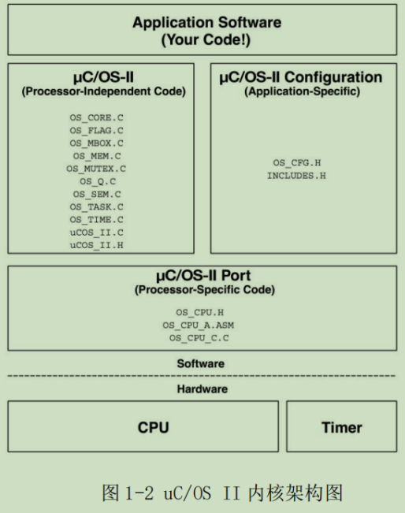
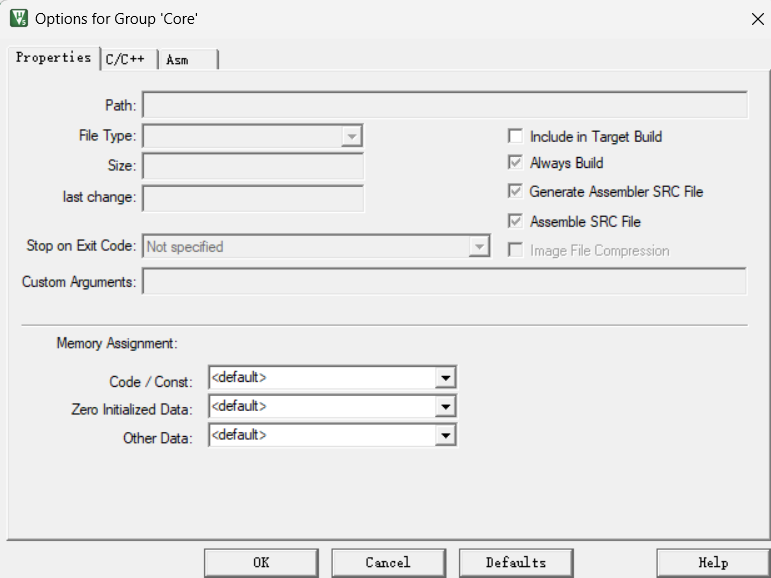

任务目标
嵌⼊式操作系统是介于⽤⼾程序和硬件间，操作系统对⽤⼾隐藏了硬件细节，⽤⼾只需要根据操作系统提供的接⼝便能对各种硬件资源进⾏访问。
这里我们以μC/OS_II为例，通过ARMKeil重构μC/OS_II代码，为后续的完整移植做铺垫；
了解操作系统的基本原理，了解任务创建，栈的生成，就绪队列，中断，信号量等基本概念。
系统结构
内核架构

上图是μC/OS_II的内核架构，据此我们可以参考官方源码确定重构文件结构大致如下：
Project–|Core–|os_core.c
|os_task.c…
|Cfg –|os_cfg.h
|app_cfg.h
|Port –|os_cpu.h
|os_cpu_c.h
|os_cpu_a.s
|Prj //Keil相关编译文件
|User //用户自定义函数以及main
模块介绍
Core层（核心，一般不做修改）
- os_core.c：负责操作系统内核的初始化和核⼼功能的实现，包括任务调度器的初始化和空闲任务的创建。
- os_task.c：包含任务管理相关的函数，如任务的创建、删除和任务控制块（TCB）的操作。
- os_flag.c：实现事件标志组功能，⽤于任务间的同步和通信。
- os_mem.c：提供内存管理功能，包括内存块的分配和释放。
- os_tmr.c：实现软件定时器功能，允许在指定时间后执⾏特定操作。
- os_mutex.c：提供互斥信号量功能，⽤于保护共享资源，防⽌同时访问导致的数据不⼀致。
- os_sem.c：uC/OS II中的信号量（Semaphore）功能在任务间的同步和互斥上起着重要作⽤。这个⽂件实现了信号量的接⼝函数
- os_mbox.c: 邮箱（Mailbox）是uC/OS II⽤于任务间消息传递的机制之⼀。这个⽂件实现了邮箱功能的接⼝函数。
- os_q.c：队列（Queue）也是任务间通信常⽤的⽅式之⼀，这个⽂件实现了队列的接⼝函数。
- ucos_ii.c：这个源⽂件包含了uC/OS II内核的核⼼功能实现，如操作系统初始化、任务调度算法、时钟节拍处理、中断管理、任务创建与删除、事件标志组、信号量、互斥量、邮箱和队列等操作的代码。它是uC/OS II操作系统运⾏的基础，实现了多任务环境下的同步与通信机制。
- ucos_ii.h：这个头⽂件包含了uC/OS II内核中使⽤的各种数据结构的定义，如任务、事件、链表、信号量等，以及函数声明。
Port层（移植层，与硬件平台相关）
⭐ Ports ⽂件夹中的⽂件包含了针对不同处理器平台的移植代码。每个处理器平台都有不同的硬件架构和操作系统接⼝，因此需要根据处理器的特点进⾏移植，以确保 uC/OS II 内核可以在特定处理器上正确地运⾏。
STM32F401RET6是ARMV7架构的芯片，所以我们在官方的文件中能看到大致有这么几个文件：
-
os_cpu.h：定义与处理器架构相关的数据类型和宏，确保操作系统能够在特定的 CPU 上运⾏。
-
os_cpu_a.asm：包含与处理器架构相关的汇编代码，如上下⽂切换和中断处理等底层操作。
-
os_cpu_c.c：实现与处理器架构相关的 C 语⾔函数，如任务上下⽂初始化等。
Cfg层（配置文件，决定任务、堆栈、功能）
- os_cfg.h：⽤于配置操作系统的功能和特性，如任务数量、堆栈⼤⼩、是否启⽤某些功能等。
- app cfg.h：包含应⽤程序所需的头⽂件，确保编译器能够找到所有必要的声明和定义。
项目创建
-
新建⼀个总工程⽂件夹，并在⽂件夹下⾯再新增⽂件夹Port、Cfg、Core、Prj，在Core⽂件夹中导⼊官⽹所给的⽂件。
-
打开keil5，把它们导入到项目中。选择project->new uversionproject,项目文件放至Prj文件夹中，然后选好芯片型号：STM32F401RETx

-
右键单击target1-addgroup新建文件夹，并重命名为Core、Port和Cfg，右键单击文件夹，addexistingfilestogroup‘xxx’添加文件。
-
添加头文件路径。打开魔术棒，在C/C++和Asm里的IncludePath中写入C程序和汇编文件的路径。

报错解决
错误类型1：缺少⽂件或找不到⽂件
解决方式：创建对应文件，暂时“骗”过编译器
1
|
.\Core\ucos_ii.h(45): error: #5: cannot open source input file "app_cfg.h": No such file or directory
|
这个报错信息提⽰我们缺少app_cfg.h⽂件，于是我们先建⽴⼀个空的app_cfg.h⽂件在Cfg⽂件夹中。
同理添加os_cfg.h、os_cpu.h
错误类型2：缺少相应的数据类型的定义和函数的声明。
解决方式：在os_cpu.h⽂件中添加相应的定义
1
|
.\Core\ucos_ii.h(372): error: #20: identifier "INT8U" is undefined
|
为什么需要定义不同的变量类型INT8U,INT16U等？
由于signed int，unsigned int等原⽣类型时，其实际位数取决于处理器。⽐如在16位系统中int通常为16位，⽽在32/64位系统中，int通常为32位。这会导致移植时不同平台时产⽣数据溢出等情况。
自定义数据类型，通过typedef明确定义数据类型的位数，保证了跨平台的⼀致性。
下表是对于μC/OS_II中数据类型的定义参考：

所以选择在os_cpu.h文件中定义相关数据类型：
1
2
3
4
5
6
7
8
9
10
11
12
|
//数据类型
typedef unsigned char BOOLEAN; // 定义布尔类型
typedef unsigned char INT8U; // ⽆符号8位整数
typedef signed char INT8S; // 有符号8位整数
typedef unsigned short INT16U; // ⽆符号16位整数
typedef signed short INT16S; // 有符号16位整数
typedef unsigned int INT32U; // ⽆符号32位整数
typedef signed int INT32S; // 有符号32位整数
typedef float FP32; // 单精度浮点数
typedef double FP64; // 双精度浮点数
typedef unsigned int OS_STK; // 每个栈条⽬为32位宽
typedef unsigned int OS_CPU_SR;// 定义CPU状态寄存器的⼤⼩（PSR = 32位）
|
错误类型3：os_cfg.h中缺少相应功能定义。
解决方式：参考官方源码中cfg文件，在os_cfg.h⽂件中添加相应的宏定义
1
|
.\ucos\ucos_ii.h(1482) : error : #35 : #error directive:"OS_CFG.H,MissingOS_FLAG_EN: Enable(1) or Disable (0) code generation for Event Flags
|
我们在os_cfg.h文件中暂时对相应参数配置如下：
1
2
3
4
5
6
7
8
9
10
11
12
13
14
15
16
17
18
19
20
21
22
23
24
25
26
27
28
29
30
31
32
33
34
35
36
37
38
39
40
41
42
43
44
45
46
47
48
49
50
51
52
53
54
55
56
57
58
59
60
61
62
63
64
65
66
67
68
69
70
71
72
73
74
75
76
77
78
79
80
81
82
83
84
85
86
87
88
89
90
91
92
93
94
95
96
97
98
99
100
101
102
103
104
105
106
107
108
109
110
111
112
113
114
115
116
|
/* ---------------------- MISCELLANEOUS ----------------------- */
#define OS_APP_HOOKS_EN 1u /* Application-defined hooks arecalled from the uC/OS-II hooks */
#define OS_ARG_CHK_EN 1u /* Enable (1) or Disable (0) argumentchecking */
#define OS_CPU_HOOKS_EN 1u /* uC/OS-II hooks are found in theprocessor port files */
#define OS_DEBUG_EN 0u /* Enable(1) debug variables*/
#define OS_EVENT_MULTI_EN 1u /* Include code for OSEventPendMulti()*/
#define OS_EVENT_NAME_EN 1u /* Enable names for Sem, Mutex, Mboxand Q */
#define OS_LOWEST_PRIO 63u /* Defines the lowest priority thatcan be assigned ... */
/* ... MUST NEVER be higher than 254!*/
#define OS_MAX_EVENTS 10u /* Max. number of event control blocksin your application */
#define OS_MAX_FLAGS 5u /* Max. number of Event Flag Groupsin your application */
#define OS_MAX_MEM_PART 5u /* Max. number of memory partitions*/
#define OS_MAX_QS 4u /* Max. number of queue control blocksin your application */
#define OS_MAX_TASKS 20u /* Max. number of tasks in yourapplication, MUST be >= 2 */
#define OS_SCHED_LOCK_EN 1u /* Include code for OSSchedLock() andOSSchedUnlock() */
#define OS_TICK_STEP_EN 1u /* Enable tick stepping feature foruC/OS-View */
#define OS_TICKS_PER_SEC 100u /* Set the number of ticks in onesecond */
#define OS_TLS_TBL_SIZE 0u /* Size of Thread-Local Storage Table*/
/* --------------------- TASK STACK SIZE ---------------------- */
#define OS_TASK_TMR_STK_SIZE 128u /* Timer task stack size (# ofOS_STK wide entries) */
#define OS_TASK_STAT_STK_SIZE 128u /* Statistics task stack size (# ofOS_STK wide entries) */
#define OS_TASK_IDLE_STK_SIZE 128u /* Idle task stack size (# ofOS_STK wide entries) */
/* --------------------- TASK MANAGEMENT ---------------------- */
#define OS_TASK_CHANGE_PRIO_EN 1u /* Include code forOSTaskChangePrio() */
#define OS_TASK_CREATE_EN 1u /* Include code for OSTaskCreate()*/
#define OS_TASK_CREATE_EXT_EN 1u /* Include code forOSTaskCreateExt() */
#define OS_TASK_DEL_EN 1u /* Include code for OSTaskDel()*/
#define OS_TASK_NAME_EN 1u /* Enable task names*/
#define OS_TASK_PROFILE_EN 1u /* Include variables in OS_TCB forprofiling */
#define OS_TASK_QUERY_EN 1u /* Include code for OSTaskQuery()*/
#define OS_TASK_REG_TBL_SIZE 1u /* Size of task variables array(#of INT32U entries) */
#define OS_TASK_STAT_EN 1u /* Enable (1) or Disable(0) thestatistics task */
#define OS_TASK_STAT_STK_CHK_EN 1u /* Check task stacks fromstatistic task */
#define OS_TASK_SUSPEND_EN 1u /* Include code forOSTaskSuspend() and OSTaskResume() */
#define OS_TASK_SW_HOOK_EN 1u /* Include code for OSTaskSwHook()*/
/* ----------------------- EVENT FLAGS ------------------------ */
#define OS_FLAG_EN 1u /* Enable (1) or Disable (0) codegeneration for EVENT FLAGS */
#define OS_FLAG_ACCEPT_EN 1u /* Include code for OSFlagAccept()*/
#define OS_FLAG_DEL_EN 1u /* Include code for OSFlagDel()*/
#define OS_FLAG_NAME_EN 1u /* Enable names for event flaggroup */
#define OS_FLAG_QUERY_EN 1u /* Include code for OSFlagQuery()*/
#define OS_FLAG_WAIT_CLR_EN 1u /* Include code for Wait on ClearEVENT FLAGS */
#define OS_FLAGS_NBITS 16u /* Size in #bits of OS_FLAGS data type(8, 16 or 32) */
/* -------------------- MESSAGE MAILBOXES --------------------- */
#define OS_MBOX_EN 1u /* Enable (1) or Disable (0) codegeneration for MAILBOXES */
#define OS_MBOX_ACCEPT_EN 1u /* Include code for OSMboxAccept()*/
#define OS_MBOX_DEL_EN 1u /* Include code for OSMboxDel()*/
#define OS_MBOX_PEND_ABORT_EN 1u /* Include code forOSMboxPendAbort() */
#define OS_MBOX_POST_EN 1u /* Include code for OSMboxPost()*/
#define OS_MBOX_POST_OPT_EN 1u /* Include code forOSMboxPostOpt() */
#define OS_MBOX_QUERY_EN 1u /* Include code for OSMboxQuery()*/
/* --------------------- MEMORY MANAGEMENT -------------------- */
#define OS_MEM_EN 1u /* Enable (1) or Disable (0) codegeneration for MEMORY MANAGER */
#define OS_MEM_NAME_EN 1u /* Enable memory partition names*/
#define OS_MEM_QUERY_EN 1u /* Include code for OSMemQuery()*/
/* ---------------- MUTUAL EXCLUSION SEMAPHORES --------------- */
#define OS_MUTEX_EN 1u /* Enable (1) or Disable (0) codegeneration for MUTEX */
#define OS_MUTEX_ACCEPT_EN 1u /* Include code forOSMutexAccept() */
#define OS_MUTEX_DEL_EN 1u /* Include code for OSMutexDel()*/
#define OS_MUTEX_QUERY_EN 1u /* Include code for OSMutexQuery()*/
/* ---------------------- MESSAGE QUEUES ---------------------- */
#define OS_Q_EN 1u /* Enable (1) or Disable (0) codegeneration for QUEUES */
#define OS_Q_ACCEPT_EN 1u /* Include code for OSQAccept()*/
#define OS_Q_DEL_EN 1u /* Include code for OSQDel()*/
#define OS_Q_FLUSH_EN 1u /* Include code for OSQFlush()*/
#define OS_Q_PEND_ABORT_EN 1u /* Include code for OSQPendAbort()*/
#define OS_Q_POST_EN 1u /* Include code for OSQPost()*/
#define OS_Q_POST_FRONT_EN 1u /* Include code for OSQPostFront()*/
#define OS_Q_POST_OPT_EN 1u /* Include code for OSQPostOpt()*/
#define OS_Q_QUERY_EN 1u /* Include code for OSQQuery()*/
/* ------------------------ SEMAPHORES ------------------------ */
#define OS_SEM_EN 1u /* Enable (1) or Disable (0) codegeneration for SEMAPHORES */
#define OS_SEM_ACCEPT_EN 1u /* Include code for OSSemAccept()*/
#define OS_SEM_DEL_EN 1u /* Include code for OSSemDel()*/
#define OS_SEM_PEND_ABORT_EN 1u /* Include code forOSSemPendAbort() */
#define OS_SEM_QUERY_EN 1u /* Include code for OSSemQuery()*/
#define OS_SEM_SET_EN 1u /* Include code for OSSemSet()*/
/* --------------------- TIME MANAGEMENT ---------------------- */
#define OS_TIME_DLY_HMSM_EN 1u /* Include code forOSTimeDlyHMSM() */
#define OS_TIME_DLY_RESUME_EN 1u /* Include code forOSTimeDlyResume() */
#define OS_TIME_GET_SET_EN 1u /* Include code for OSTimeGet()and OSTimeSet() */
#define OS_TIME_TICK_HOOK_EN 1u /* Include code forOSTimeTickHook() */
/* --------------------- TIMER MANAGEMENT --------------------- */
#define OS_TMR_EN 0u /* Enable (1) or Disable (0) codegeneration for TIMERS */
#define OS_TMR_CFG_MAX 16u /* Maximum number of timers*/
#define OS_TMR_CFG_NAME_EN 1u /* Determine timer names*/
#define OS_TMR_CFG_WHEEL_SIZE 7u /* Size of timer wheel (#Spokes)*/
#define OS_TMR_CFG_TICKS_PER_SEC 10u /* Rate at which timer managementtask runs (Hz) */
/* ---------------------- TRACE RECORDER ---------------------- */
#define OS_TRACE_EN 0u /* Enable (1) or Disable (0) uC/OS-IITrace instrumentation */
#define OS_TRACE_API_ENTER_EN 0u /* Enable (1) or Disable (0) uC/OS-IITrace API enter instrum. */
#define OS_TRACE_API_EXIT_EN 0u /* Enable (1) or Disable (0) uC/OS-IITrace API exit instrum. */
|
在后续的学习中，可以把相关的功能给禁⽤，注意部分参数的取值范围，若设定的参数不在范围内则会报错。
1
|
#define OS_TMR_EN 0u /* Enable (1) or Disable (0) code generation for TIMERS */
|
将 OS_TMR_EN 设置为 0u 会使 uC/OS-II 禁⽤定时器功能的代码⽣成。STM32F401具有多个定时器Timer，可以满⾜定时中断、PWM输出、输⼊捕获、输出⽐较等功能，也可以使⽤Systick（SysTick是 Cortex-M 内核中的⼀个系统定时器，属于内核的⼀部分）
1
|
#define OS_DEBUG_EN 0u /* Enable(1) debug variables*/
|
OS_DEBUG这个功能在后续的操作中没什么⽤但是会产⽣报错，所以我们也将这个功能给关闭。
错误类型4：链接时重复定义
解决方法：搜索重复定义的文件，调整include path
1
|
.\Objects\projects.axf: Error: L6200E: Symbol OSEventNameGet multiply defined (by ucos_ii.o and os_core.o).
|
上述报错说的是OSEventNameGet在两个文件ucos_ii.o and os_core.o中被重复定义；
这两个.o文件都是编译器编译同名.c文件生成的对象（object）文件。
这里一般的思路是借助CTRL+F搜索对应变量，定位重复部分，然后调整.h或者.c的“#include ‘xxx’ “部分。
为什么链接阶段报错而不是编译？
——简单理解为预处理粘贴include部分的代码块，编译不报错，但是链接时会发现”重复定义“
可以参考《深入理解计算机系统》这本书，或者这篇博客，
- 预处理器主要将项目代码进行处理，删除注释、#include、展开宏定义等；
- 编译器则是我们熟悉的词法分析、语法分析、语义分析等过程得到.s文件；
- 经过汇编器处理后汇编得到.o文件;
- 之后链接器会检查所有⽬标⽂件和库⽂件中的符号定义和引⽤；
- 最终生成可执行程序。
具体解决
在重构项目中，ucos_ii.c文件”粘贴“了多个os_xxx.c文件中的内容，而项目中os_xxx.c也会被编译，最后在链接时发现重定义；

所以我们只需要右键core，点击魔术棒，关闭此部分的编译包含。

错误类型5：缺少启动⽂件导致链接失败
解决方法：导入对应启动文件.s
1
|
.\Objects\ucosii.axf: Error: L6320W: Ignoring --entry command.Cannot find argument 'Reset_Handler' //截取了一条
|
缺少了启动文件，程序找不到执行入口以及中断向量表等，所以也会报错，后续我们还会对启动文件进行进一步分析；
这里只需要新建一个Startup文件夹，导入startup_stm32f40_41xxx.s。
错误类型6：os_cpu_.c中hook函数
解决方法：暂时空定义函数，后续补充完善
1
|
.\Objects\test.axf: Error: L6218E: Undefined symbol OSCtxSw (referred from os_core.o).
|
什么是Hook函数？
钩子函数是uC/OS-II内核在特定操作（如任务创建、删除、切换等）前后调用的空函数（默认为空实现）。开发者通过重写这些函数，可以在不修改内核源码的情况下扩展功能。常见用途包括：
- 调试与监控：记录任务创建/删除时间、堆栈使用情况等。
- 资源管理：在任务创建时初始化自定义数据结构或外设。
- 性能分析：统计任务执行时间或上下文切换次数。
- 安全检查：验证任务参数的合法性。
以OSTaskCreateHook为例，它在任务创建后被调用，允许开发者在任务首次运行前执行自定义逻辑。
简单来讲就是获取操作系统的相关状态
具体解决
我们需要新建⼀个os_cpu_c.c⽂件和⼀个os_cpu_a.s⽂件，在其中补充缺少的函数实现，⽬前我们不需要补全具体的函数实现细节，只需要写⼀个空定义来骗过编译器。
在os_cpu_c.c⽂件中，我们定义空的系统初始化函数、钩⼦函数、cpu异常栈基地址和这是内核可⽤
的优先级边界。
1
2
3
4
5
6
7
8
9
10
11
12
13
14
15
16
17
18
19
20
|
#include "os_cpu.h"
// 系统初始化函数，通常⽤于设置硬件相关的设置
void SystemInit(){}
// 定义空的钩⼦函数
void OSInitHookBegin(){}
void OSInitHookEnd(){}
void OSTCBInitHook(){}
void OSTaskCreateHook(){}
void OSTaskIdleHook(){}
void OSTaskReturnHook(){}
void OSTaskSwHook(){}
// 任务堆栈初始化函数，为新任务分配堆栈空间
OS_STK *OSTaskStkInit(void (*task)(void *p_arg), void *p_arg, OS_STK *ptos,
INT16U opt){
return ptos;
}
// 定义⼀个空的CPU异常栈基地址
void OS_CPU_ExceptStkBase(){}
// 设置内核可⽤的优先级边界
void OS_KA_BASEPRI_Boundary(){}
|
错误类型7：中断、恢复与切换实现函数
解决方法：编写汇编函数确定相关逻辑
为什么要使用汇编？
在os_cpu_a.s⽂件中，实现的是与处理器相关的函数,这⼀部分的函数涉及CPU 特权寄存器的访问、寄存器状态的保存与恢复，以及任务上下⽂切换。
这些操作需要对CPU 体系结构和指令集进⾏精确控制，⽽⾼级语⾔（如 C）⽆法不提供直接读写特定硬件寄存器（如中断寄存器PRIMASK、堆栈PSP、任务控制块TCB）的机制，也难以确保任务切换的精确性和⾼效性。
具体解决
创建os_cpu_a.s文件，定义相关函数：
1
2
3
4
5
6
7
8
9
10
11
12
13
14
15
16
17
18
19
20
21
22
23
24
25
26
27
28
29
30
31
32
33
34
35
36
37
38
|
EXPORT OS_CPU_SR_Save
EXPORT OS_CPU_SR_Restore
EXPORT OSCtxSw
EXPORT OSIntCtxSw
EXPORT OSStartHighRdy
EXPORT OS_CPU_PendSVHandler
AREA |.text|, CODE, READONLY, ALIGN=2
THUMB
REQUIRE8
PRESERVE8
; 保存中断状态并关中断
OS_CPU_SR_Save PROC
MRS R0, PRIMASK ; 读取PRIMASK/BASEPRI（中断状态寄存器）并存⼊R0
CPSID I ; 关闭中断
BX LR ; 返回
ENDP
; 恢复中断状态
OS_CPU_SR_Restore PROC
MSR PRIMASK, R0 ; 将R0的值写回PRIMASK/BASEPRI寄存器
BX LR
ENDP
; 任务上下⽂切换，此处为空实现，仅供通过编译。以后需要实现任务上下⽂切换代码。
OSCtxSw PROC
BX LR
ENDP
; 中断级任务切换，空实现
OSIntCtxSw PROC
BX LR
ENDP
; 启动最⾼优先级任务，空实现，实际需要初始化任务堆栈并启动第⼀个任务
OSStartHighRdy PROC
BX LR
ENDP
; PendSV 中断处理，空实现，实际应实现PendSV中断处理以完成任务切换
OS_CPU_PendSVHandler PROC
BX LR
ENDP
END
|
错误类型8：缺少main函数
解决方法：添加主函数
1
|
.\Objects\test.axf: Error: L6218E: Undefined symbol main (referred from __rtentry2.o).
|
创建user文件夹，加入main.c文件：
1
2
3
4
5
6
7
|
#include "ucos_ii.h"
int main()
{
while(1)
{
}
}
|
工程验证
想法1：调⽤函数
eg：OSTimeDly(1000 * 2);
预期结果：编译通过且不报错，说明⼯程搭建成功。
想法2：点亮⼩灯
由于任务创建点亮⼩灯需要例如创建tcb，堆栈⼤⼩优先级，队列，延时等知识，在后续的学习中我们才会学到。但我们仍想通过点亮⼩灯来验证⼯程搭建成功。
因此我们的思路是：
写⼀个led.c，通过上⾯我们提到的钩⼦函数调⽤led.c，再在main.c⾥⾯调⽤钩⼦函数，从⽽达到通过点亮⼩灯验证⼯程搭建是否成功。由于时间关系，我们直接来看我们写好的点灯程序。
这⾥我们需要注意的是我们需要注释掉我们⾃⼰在cpu_c.h中写的空的SystemInt（）函数，因为在
f401已经含有初始化系统的函数。
预期结果：编译通过且不报错，板载⼩灯L2闪烁，说明⼯程搭建成功。
项目总结
通过本项目，掌握了μC/OS-II内核重构的核心流程，解决了跨平台移植中的典型问题，为后续实现完整RTOS功能打下坚实基础。下一步将深入任务调度与硬件驱动集成，构建实时嵌入式应用。